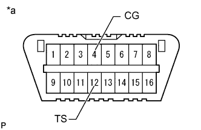
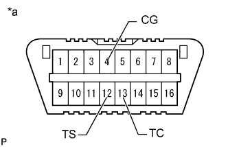

ПНЕВМАТИЧЕСКАЯ ПОДВЕСКА > ПРОЦЕДУРА ВЫПОЛНЕНИЯ АКТИВНОЙ ДИАГНОСТИКИ |
| ПРОВЕРКА СИГНАЛОВ (ПРИ ИСПОЛЬЗОВАНИИ ПОРТАТИВНОГО ДИАГНОСТИЧЕСКОГО ПРИБОРА) |
Выключите зажигание.
Подсоедините портативный диагностический прибор к DLC3.
Запустите двигатель.
Включите портативный диагностический прибор.
Войдите в следующие меню: Chassis / Air suspension / Utility / Signal Check.
Проверьте информацию на мультиинформационном дисплее и убедитесь, что система находится в режиме активной диагностики.
Проверьте каждую позицию в таблице ниже, выполнив соответствующие операции.
| Контрольный параметр | Действие |
| Сигнал управляющего переключателя амортизатора | Медленно переведите управляющий переключатель амортизатора из положения COMF в положение SPORT, а затем обратно в положение COMF |
| Сигнал переключателя регулировки высоты | Сначала нажмите на переключатель регулировки высоты со стороны подъема, а затем со стороны опускания |
| Сигнал выключателя отключения регулировки высоты | Переведите выключатель отключения регулировки высоты из включенного положения в выключенное |
Следуя подсказкам на экране портативного диагностического прибора, считайте коды DTC режима активной диагностики.
Проверьте наличие неисправности, используя приведенную ниже таблицу DTC режима активной диагностики. После завершения активной диагностики отсоедините портативный диагностический прибор и выключите зажигание.
| ПРОВЕРКА СИГНАЛОВ (ПРИ ИСПОЛЬЗОВАНИИ ДИАГНОСТИЧЕСКОГО ЖГУТА ПРОВОДОВ SST) |
Выключите зажигание.
|  |
С помощью SST соедините контакты 12 (TS) и 4 (CG) на DLC3.
| *a | Вид спереди разъема DLC3 |
Включите зажигание (IG).
Проверьте информацию на мультиинформационном дисплее и убедитесь, что система находится в режиме активной диагностики.
|  |
С помощью SST соедините контакты 13 (TC) и 4 (CG) на DLC3.
| *a | Вид спереди разъема DLC3 |
Проверьте каждую позицию в таблице ниже, выполнив соответствующие операции.
| Контрольный параметр | Действие |
| Сигнал управляющего переключателя амортизатора | Медленно переведите управляющий переключатель амортизатора из положения COMF в положение SPORT, а затем обратно в положение COMF |
| Сигнал переключателя регулировки высоты | Сначала нажмите на переключатель регулировки высоты со стороны подъема, а затем со стороны опускания |
| Сигнал выключателя отключения регулировки высоты | Переведите выключатель отключения регулировки высоты из включенного положения в выключенное |
Считайте коды DTC режима активной диагностики, отображаемые на мультиинформационном дисплее.
Проверьте наличие неисправности, используя приведенную ниже таблицу DTC режима активной диагностики.
После завершения работы в режиме активной диагностики отсоедините SST и выключите зажигание.
| ТАБЛИЦА КОДОВ DTC РЕЖИМА АКТИВНОЙ ДИАГНОСТИКИ |
Если в ходе проверки DTC режима активной диагностики выдается код неисправности, проверьте участки предполагаемого местонахождения неисправности, перечисленные для данного кода. Подробные описания каждого из кодов приведены на страницах, указанных в колонке "См. стр." таблицы DTC.
| Код DTC | Диагностика | Неисправный участок | См. стр. |
| C1791/91 | Цепь управляющего переключателя амортизатора |
|
Нажмите здесь
|
| C1792/92 | Цепь переключателя регулировки высоты |
|
Нажмите здесь
|
| C1794/94 | Цепь выключателя отключения регулировки высоты |
|
Нажмите здесь
|
| C1796/96 | Неисправность правого переднего датчика ускорения |
|
Нажмите здесь
|
| C1797/97 | Неисправность левого переднего датчика ускорения |
|
Нажмите здесь
|
| C1798/98 | Неисправность заднего датчика ускорения |
|
Нажмите здесь
|